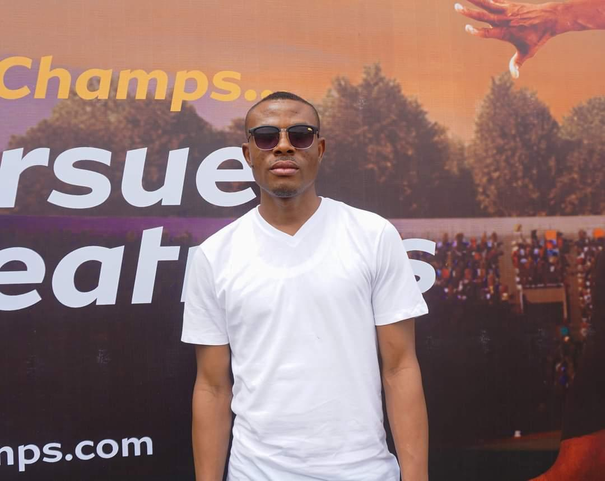

Welcome to Dynamic Athletics Sports
Your ultimate source for athletics news, results, and videos.
About Us
Dynamic Athletics Sports is dedicated to promoting and supporting athletes across various disciplines. Founded in 2025, our mission is to provide comprehensive coverage of athletics, including results, news, and exclusive videos.
Our platform ensures that athletes, fans, and coaches stay updated with the latest developments in the sporting world.
Founder
Olabanji Ayegbusi is a certified and experienced athletics coach, sports manager, and media personnel specializing in athletics. He is also a certified Basic Life Saver (BLS) and meeting organizer. As the founder of Dynamic Athletics Media & Sports Management Ltd, he organizes periodic athletics competitions for both emerging and elite athletes in Nigeria. Banji was the media officer for Team Nigeria at the CAA Region II Senior Athletics Championships in Togo 2023 and has managed Team Nigeria's athletics social media page including his own media platforms. His platform, Dynamic AF & Dynamic Athletics hub, is recognized as one of the top athletics-focused social media pages in Nigeria, providing coverage of both local and international events. He has covered major athletics events such as the African Games, African Championships, National Championships, and African Athletics Region II Championships, to mention but a few. Currently, he serves as an assistant athletics coach at Altivelis Athletics Club in Lagos while managing his sports management company and organising Meets. He holds a degree in Philosophy from the University of Ado Ekiti (now Ekiti State University), a higher diploma in sports management from the National Institute for Sports, and a basic certificate in athletics coaching. He has also earned a certificate in effective writing and communication from the Nigerian Institute of Journalism, among other professional qualifications.
About the Developer

This website was developed by a passionate web developer dedicated to building platforms that empower the sports community. Combining technology and sports, the goal was to create a seamless experience for users to stay informed and engaged.